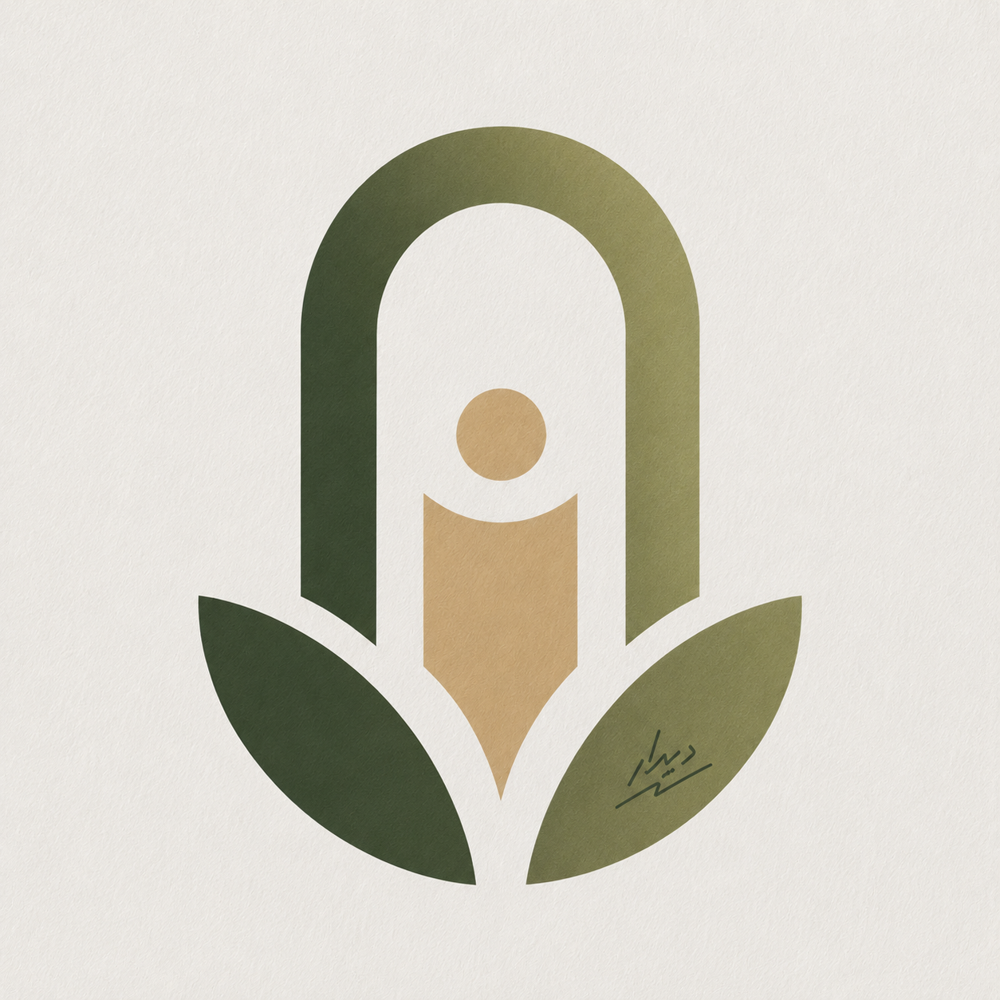

Didar versteht sich als Ort der Begegnung, des kulturellen Dialogs und der künstlerischen Auseinandersetzung. Im Mittelpunkt stehen persische Literatur, Kunst, Film und Musik sowie deren Verbindung mit der vielfältigen Kulturlandschaft Stuttgarts.
Wir schaffen Raum für Lesungen, Filmabende, Poetry Nights, Ausstellungen und kulturelle Projekte, in denen Sprache, Kunst und gesellschaftlicher Austausch miteinander in Dialog treten.
Didar – ein Raum für Literatur, Kunst und Begegnung.
Telegram-Kanal beitreten